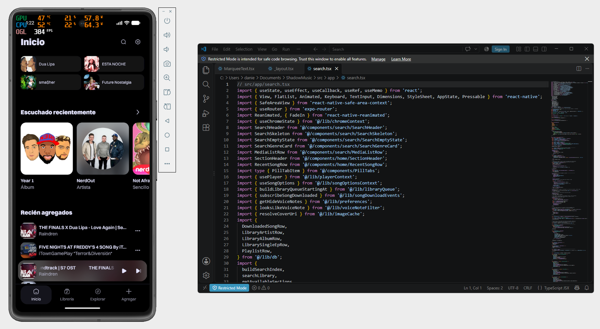

Music App
Download, play, and discover new songs
26'
Real App
Product Designer
Design Engineer
Overview
This project was born out of a desire to recapture the music listening experience I had in 2011 with my iPod Touch, which had a dedicated media player built into the system where you could listen to songs you’d downloaded or purchased.
Goal
Create an app where you can listen your music library and play those files, with the ability to browse by artist and genre. You can add lyrics to any song and manage your audio files right from the app.

Problems
These days, there are no dedicated players for the system; everything relies on streaming services, which can have varying audio quality and sometimes don't have the song you want. And there are third-party players that, although free, offer a completely different experience, requiring you to try out countless of them to figure out which one is best.
Tools
Although I'm a music lover and I had trouble paying for multiple streaming services at once to listen my music at the quality I want. I wanted to find out what other users think about the current state of music, both on streaming services and elsewhere. So I conducted secondary research on various services and gathered the most important insights for the project.

Knowing the industry
It was necessary to understand how the industry presents songs and general content to users, so I could create an app that offers an experience of equal or better quality.
Tools
So I conducted a benchmark test using three of the apps that I consider to offer a good experience when listening to, exploring, searching for, and managing music. I then analyzed each one to gain more valuable insights.

Final insights
Content filtering
Users have had trouble finding their songs and albums. In some
cases, they’ve had trouble finding the right song quality. Different ways to filter
and display content should be included to improve search and navigation.
Shortcutes
Use simplified access to songs, playlists, and artists whenever
possible, so users can easily return to their songs without having to search too
much.
Universal creation
Building on the concept of shortcuts, provide easy access to
the creation features that users frequently use within the app.
Main HMW...?
Several challenges were identified, but the main ones to be addressed
was:
...Create shortcuts based on user activity in a way that
makes them easy to identify and understand?
...Create a way to edit and manage song options in a way
that isn't confusing for the user?
...Organize the way users view their songs, playlists,
and artists within the app in a way that doesn't create cognitive load and is
easy to understand?
Solution
To address each of these challenges, I created a framework that would always aim to meet the product goals I defined following the research. In this way, I established the logic behind the main workflows and the app's structure.


Visual design
To address these challenges and issues, create an app whose
structure helps users navigate easily and accesible manage their downloaded songs.
Real app
The showcase videos you'll see are from the actual app I
developed using React Native, which, as I mentioned in the “Development” section, is in
its final two phases.
Select favourite artists
Selection of favourite artists by
regional top and by search. It helps the user easily filter their favorite
artists before downloading songs.
Reason
It was designed this way to help users
download their first songs and save artists and songs right from the start,
which feeds the “Explore” algorithm.
Download artists songs
Screens for downloading songs by selected
artists, allowing users to download their top 20 most played songs or download
the best songs individually.
Reason
I decided to display the 20 most-played
songs by the selected artist, as this increases the likelihood that the user
will find the songs they're looking for. We've also included the
option to download all 20 songs at once to save time and effort.
Home (Default version)
Home screen after completing onboarding,
showing quick access by default.
Reason
Based on one of my research insights,
several quick-access options were added right from the start so that users can
return to any song or section they want. In addition, these options are clearly
dynamic, depending on what the user listens to, removes, or adds, they react in
real time to the user’s actions.
Home (Full version)
Home screen with all the quick access
shortcuts, which appear after listening to songs and creating playlists.
Reason
As I mentioned earlier, these shortcuts
react dynamically, displaying and creating access paths based on the user's
actions. This was designed to help users explore their songs and sections in a
easier and more dynamic way.
Library
A library screen where users can filter
their songs and content to access them more quickly.
Reason
For the library, my goal was to make it
easy for users to access and filter all of its content first, using a subnav
menu for general filtering, and then using in deep options such as date, name,
etc. That way, users can manage and find content without having to use the
search function.
Player components
A mini player and player screen with
dynamic video for each song, as well as a graphical element that highlights the
song currently playing.
Reason
Each of these three
components (song list player, mini player, and screen player) was designed to
stand out from the rest and provide a satisfying experience when viewed and
used. They were also carefully designed to clearly distinguish between all
available actions within them, guiding the user through each step based on their
needs.
Download with link
Download a song from a YouTube link by
simply copying it and opening the app.
Reason
For cases where a song cannot be
identified within the app, I designed an automatic YouTube link paste workflow
where the system automatically recognizes the link and allows the song to be
played and downloaded. This will cover 100% of all existing songs.
Changing song
Song changing is obviously both manual
and automatic, both within and outside the app, with crossfading between songs
if the user chooses.
Reason
It is obviously one of the
main components (or the main component) of the entire app, so it was designed
with a focus on clearly distinguishing all the available actions within it,
making them easy for the user to find. And it was designed to provide a sense of
satisfaction every time it is viewed and used.
Background Control
The user's native system plays the
song in the background, and the user can control it without having to open the
app.
Reason
In addition to the Player Screen, the app
was integrated with the system's native media player so that users can
control their playlists in the background.
Download song
Users can search for a song using the
universal “Add” feature, listen to it, and download it to have it in the
app.
Reason
I needed the download option
to be visible without being intrusive, because although it’s a key component,
it’s not the main focus of the experience. That’s why I decided to place it
within the universal “Add” section, where the user adds or creates new content.
This way, it’s always visible, but it doesn’t interfere with the user’s main
experience.
Delete song
Users can manage actions related to their
song using the "Song options". One of these options is to delete the
song from their storage and, consequently, from the app.
Reason
Speaking of “Song Options,” it was
designed so that users can see the options and understand them quickly. As for
deleting songs, the process includes a deletion confirmation and immediate
feedback at each step, both in the form of a toast message (indicating success
or failure) and by removing the song from the user's view in lists such as
artists, albums, or playlists, as applicable.
Other Solutions
As I going to mention in “Development,” I haven't finished
development yet, and I'm in the final phase of it. So here I'm showing you the
remaining solutions just as design mockups. If you come back here in the future,
you'll see a video of them working inside the app :)

Artist profile
Users can access each artist's
profile, manage and listen to their songs in a more organized way by that
artist.
Reason
The artist's profile serves as a
more specific filter that allows users to view specific songs. It was designed
to display the artist's songs, albums, and playlists, so users can browse
through this content. It also shows recommendations for similar artists, so
users can continue discovering new songs.
Album, Single/EP
The “Album, Single/EP” screen allows
users to view songs that belong to a specific release by their artist, serving
as the final filter for each song.
Reason
On these screens, the user can see the
songs they have, and if any songs are missing, the system allows them to
download the missing songs to complete the album or single/EP if there is more
than one song. In this way, these screens anticipate the user’s action of
downloading missing songs for their album.


Playlist
Users can create playlists and add any
song to them.
Reason
For the "Playlist" section, to
be honest, it remained very much in line with what’s currently available on the
market. However, “shortcuts” were added for artists and genres within each
playlist, so that users can explore sections with minimal effort. This, like
many other shortcuts, is based on the research that was conducted.
Genre
Users can access the screen for any genre
they want and view the songs, albums, playlists, and artists listed there.
Reason
The “Genre” screen was designed to serve
as both a content filter and a shortcut, allowing users to view specific content
and continue exploring different sections with minimal effort.


Explore
A discovery screen for new songs,
artists, and albums based on what the user listens to within the app.
Reason
This section serves as a recommendation
algorithm based on what the user listens to. It shows the user personalized
playlists, new albums by their favorite artists, and albums and artists similar
to what they listen to. Overall, it’s a dynamic feature designed to help the
user continue exploring.
Synchronized lyrics
Users can add lyrics manually or let the
system add them automatically. These lyrics are synchronized with the audio and
animate automatically when the song plays.
Reason
The Lyrics feature works
both manually, allowing users to add playlists manually if they choose. And
automatically, by downloading the lyrics and syncing them when the song is
downloaded. It also offers an automatic addition feature, which the user can
enable by going to “Song Options” and selecting “Automatically Add Lyrics.” All
of this is designed to address a feature gap, as many music playback apps do not
include these lyrics options.

Development
To build this app, I set up the entire development environment,
built the app using React Native, and turned to Claude for help when I needed it.
I'm in the final stages of development, and I've definitely learned a lot
:).
